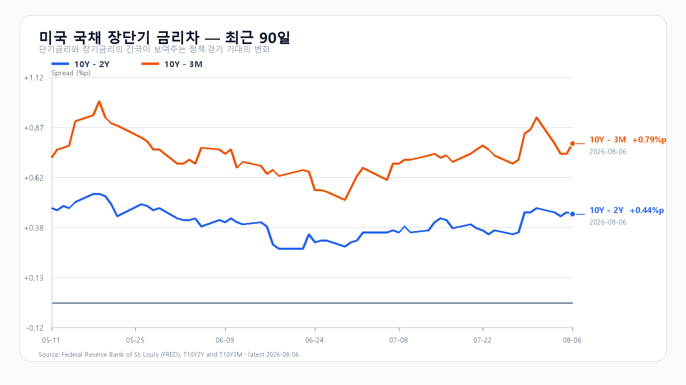
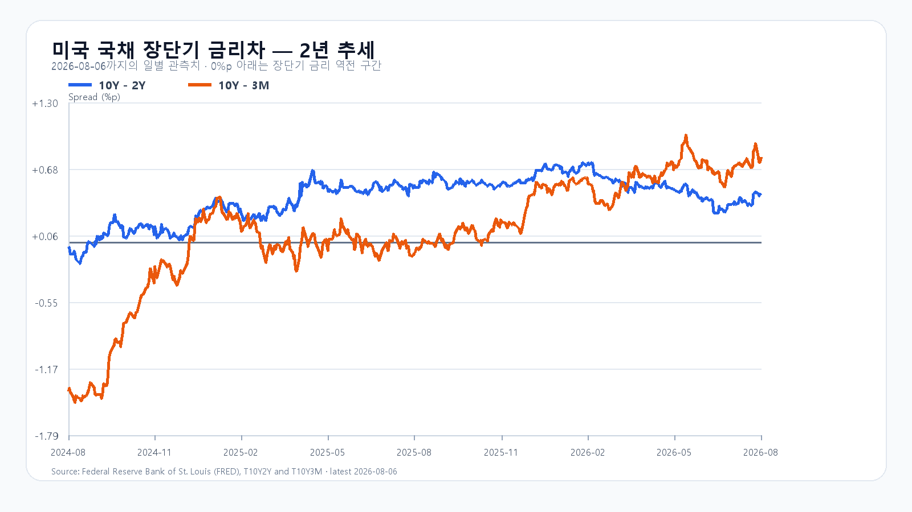

오늘의 한 문장
전일 3조원대 외국인 매도와 2조원대 비차익 프로그램 매도가 만든 급락을, 오늘 외국인 현물·프로그램 순매수와 대형 반도체 반등이 되돌리고 있습니다. 시가 6,365선을 회복한 지수는 이제 6,400선 안착을 시험합니다.
매도 충격 뒤 돌아온 현물 수급
8월 6일 KOSPI는 6,296.38로 4.58% 하락했습니다. 외국인은 3조2,893억원, 기관은 1,214억원을 순매도했고 개인은 3조3,367억원을 받아냈습니다. 프로그램에서는 차익 거래가 1,753억원 순매수였지만 비차익 거래가 2조3,010억원 순매도로 기울며 전체 2조1,257억원이 빠져나갔습니다.
오늘은 수급 방향이 달라졌습니다. 09:11 KST 외국인은 2,971억원, 기관은 30억원을 순매수하고 프로그램 전체도 2,371억원 순매수입니다. 개인은 2,690억원을 순매도했습니다. 상승 596개·하락 231개의 시장 폭도 반등이 초대형주에만 머물지 않았음을 보여줍니다.
| 항목 | 현재 | 확인선 |
|---|---|---|
| KOSPI | 6,385.43 · +1.41% | 6,400선 |
| KOSDAQ | 810.50 · +1.10% | 장중 고점 814.52 |
| 삼성전자 | 236,750원 · +2.71% | 장중 고점 239,500원 |
| SK하이닉스 | 1,517,000원 · +1.47% | 장중 고점 1,542,000원 |
| KODEX 레버리지 | 94,845원 · +2.87% | 장중 고점 95,830원 |
| 달러/원 | 1,424.40원 | 1,425원 안팎 |
KOSPI는 6,415.60까지 오른 뒤 6,385.43에서 6,400선과 맞서고 있습니다. KODEX 레버리지는 시가를 넘어섰습니다. 외국인 현물과 비차익 프로그램의 순매수가 오전 내내 유지되는지가 반등의 지속성을 결정합니다.
미국 반도체보다 무거운 유가와 금리
8월 6일 미국 증시는 S&P500 -0.18%, Nasdaq -0.06%, Dow -0.85%로 마감했습니다. 반도체는 지수보다 버텼습니다. SOXX +0.34%, SMH +0.31%, AMD +1.50%, Broadcom +0.55%였고 Nvidia -0.10%, Micron -1.31%로 종목별 차이가 컸습니다.
주가의 상단을 누른 것은 유가와 국채금리였습니다. 브렌트유는 3.8% 오른 배럴당 82.49달러를 기록했습니다. 미국 국채 2년물은 4.25%, 10년물은 4.69%로 각각 전일보다 7bp, 6bp 올랐습니다. 유가 상승이 물가 부담을 키우고 장기금리가 높은 수준을 유지하면 AI·반도체의 실적 개선도 주가 배수 확장으로 곧장 이어지기 어렵습니다.
오늘 밤 고용보고서가 반등의 높이를 정한다
미국 신규실업수당 청구는 19만9,000건, 2분기 생산성은 연율 1.4%, 단위노동비용은 1.3%를 기록했습니다. 경기 급락 신호가 약한 가운데 금리는 다시 올랐습니다.
오늘 밤 9시 30분 발표되는 7월 고용보고서의 시장 예상은 비농업 고용 약 8만5,000명 증가, 실업률 4.2%입니다. 고용이 완만하게 식고 임금 압력까지 안정되면 장기금리가 내려가며 반도체 반등이 이어질 수 있습니다. 고용이 예상보다 강해 금리가 더 오르거나, 고용은 약한데 임금 압력이 남으면 오전 반등은 상단에서 막힙니다. 8월 9일 오전 10시 30분에는 중국 7월 CPI·PPI도 이어집니다.
메모리 실물과 주가의 다른 속도
8월 5일 공개 현물가는 DDR5 16Gb 51.333달러, DDR4 16Gb 86.683달러, DDR4 8Gb 42.112달러입니다. DDR4 16Gb는 0.85% 올랐고 나머지 두 품목은 보합이었습니다.
전일 삼성전자와 SK하이닉스 급락은 실물 가격 하락보다 현물·프로그램 매도와 높은 금리에 민감하게 반응한 결과였습니다. 오늘 대형 반도체가 반등했어도 업황과 주가 수급을 같은 속도로 읽어서는 안 됩니다. 공급 부족은 중기 하단을 지지하고, 외국인 수급과 금리는 단기 진입 가격을 결정합니다.
미 국채 장단기 금리차
8월 6일 FRED 기준 10년-2년물 금리차는 +0.44%포인트, 10년-3개월물 금리차는 +0.79%포인트입니다. 두 금리차는 플러스 구간이지만, 현재 반도체에는 10년물 4.69%라는 절대 수준이 더 직접적인 부담입니다.


오늘의 시나리오와 확인 기준
외국인·프로그램 순매수가 하단을 받치지만 6,365선과 미국 고용보고서 대기가 상단을 제한합니다.
외국인 현물과 비차익 프로그램 순매수가 유지되고 KOSPI 6,400선, 삼성전자 239,500원, SK하이닉스 1,542,000원을 넘어야 합니다.
외국인 현물과 프로그램이 다시 매도로 돌아서고 전일 종가 6,296.38을 이탈하면 8월 6일 저점 6,238.32가 다음 기준이 됩니다.
KODEX 레버리지는 94,845원에서 장중 고점 95,830원을 확인해야 합니다. 93,920원은 오늘 시가, 92,200원은 전일 종가, 90,290원은 전일 저점입니다.
오늘 판단은 공격 30점 · 관망 50점 · 방어 20점입니다.
자료 기준
한국 장중 시세와 수급은 Naver Finance의 8월 7일 09:11 KST 자료를 반영했습니다. 미국 시장은 AP, 고용·생산성은 미국 노동통계국, 국채금리는 미국 재무부, 금리차는 FRED, 메모리 현물가는 TrendForce 자료를 사용했습니다.